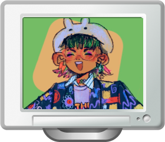
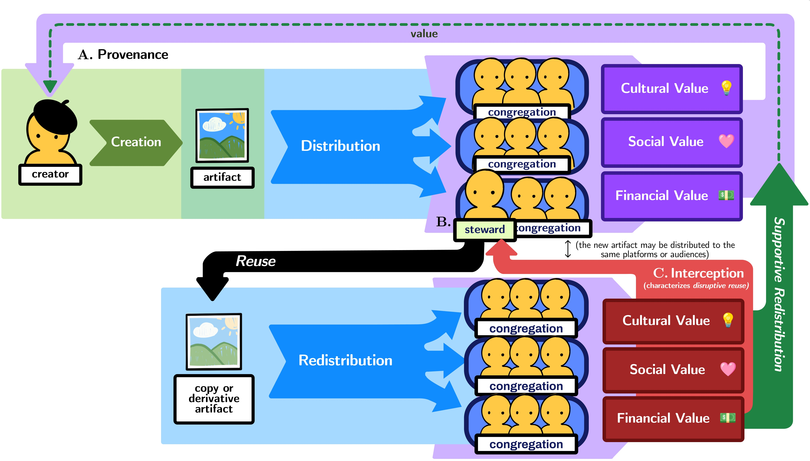
Creativity support tool (CST) research in HCI has focused on supporting art-making, not art-sharing – despite the fact that distribution activities characterize a bulk of creative labor for online artists today. How might we better understand the way technology systems – including generative AI systems – support or disrupt online creative communities, at a network level? Through interviews with 25 artists, data scientists, and data artists, we develop the Creativity Supportive Ecosystem: a framework for understanding the function of the online art world, and the roles that system designers can take to better empower artists against creative community threats, like non-consensual reuse and genAI-driven displacement.
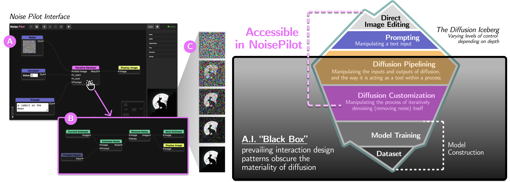
Prompt-based and Chat-based AI tools tend to obscure the image generation process within black-box, anthropomorphic systems. We wanted to see what artists would make when they could manipulate diffusion more directly. We built Noise Pilot: a CST where artists can design diffusion processes at three levels of depth, and invited 9 artists to use it for 2 weeks. They designed these awesome diffusion pipelines and made cool art, a lot of which they couldn't make with prompting alone---they taught us a lot. We relate our findings to a discussion of how black-box AI-CSTs limit creative power, and propose subverting this by favoring visibility over obscurity, and materiality over personification.
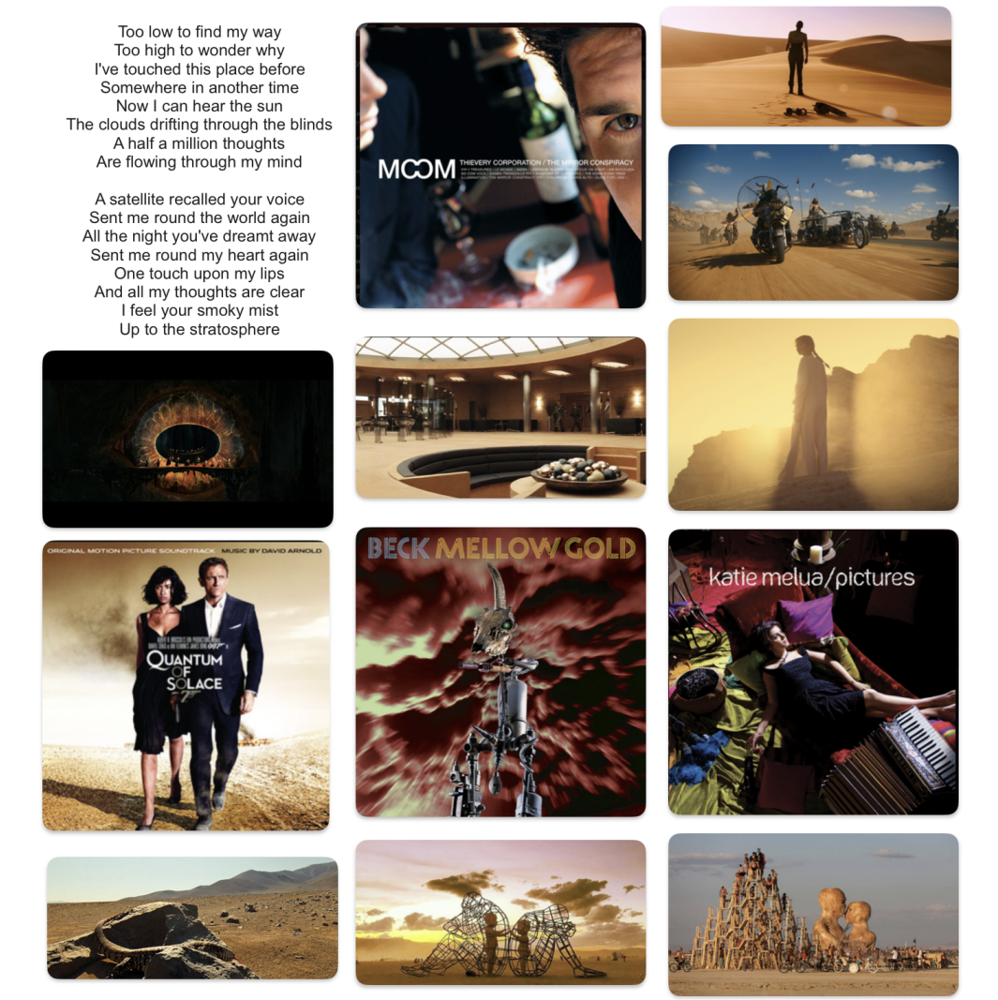
We compare experiences with interfaces that center user agency vs. interfaces driven by AI-agents and recommendation algorithms. We articulate a design stance called Hypertextual Friction: We envision a future for the web that rejects the flattening of culture; that rejects dependence on algorithms to guide us blindly through increasingly obscured networks, so often opaquely constructed in service of technocapitalistic interests; We instead echo existing work by artists and hypertext researchers' in our commitments: honoring navigation as authorship, holding user-driven meaning-making as sacred, and valuing friction, traceability, and structure in designing interactions that preserve human agency and ownership on the web.
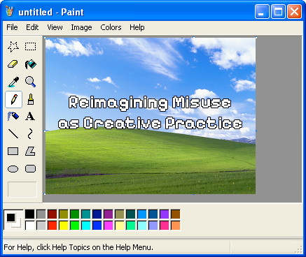
A deep dive into the notion of creatively "misusing" digital tools, through interviews with 20 artists – towards an understanding of "misuse" and "use" as the same motions, framed by different cultural perspectives and norms.
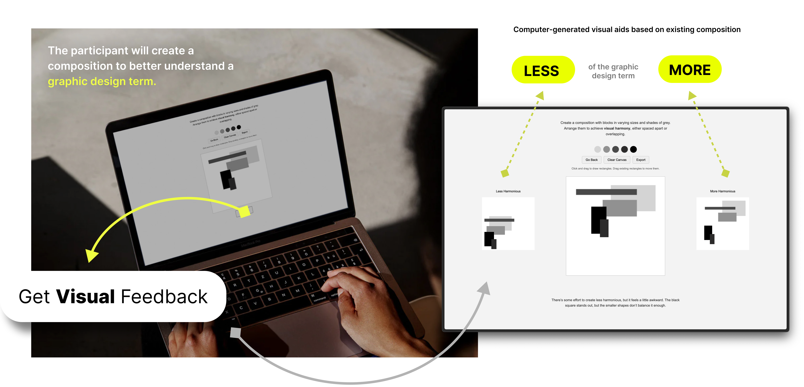
Through thematic analysis of interviews with 11 designers, we identify key language barriers present in graphic design education. We develop EKPHRASIS, an AI-supported interactive system that provides real-time visual aids, towards a multimodal design language learning experience for novice designers.
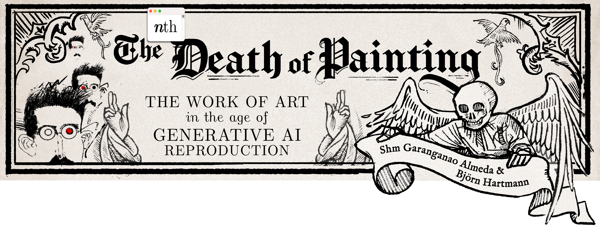
We consider how once-emergent technologies (e.g. printing, photography, conceptual & computational art) have historically transformed artistic value and culture, applying critical feminist- and medium-theory lenses to the contemporary question of GenAI's impact on imagery, content, and art. Informed by critical art and image history, we make recommendations for medium-conscious, data-conscious, and power-conscious design of AI systems.
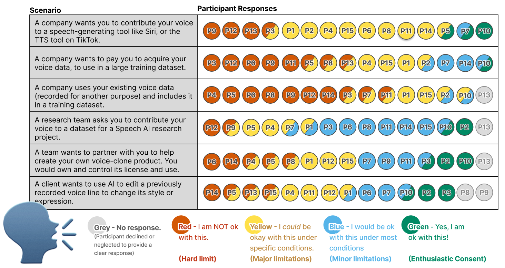
A study with 15 professional voice artists, investigating how Speech AI development practices are impacting their work. We call for researchers and developers to center and honor the voice community's uniquely human, situated expertise – as creative performers, and as experienced organizers and negotiators of creative rights in the face of exploitative labor practices – towards an equitable and community-led future for creative voice work.
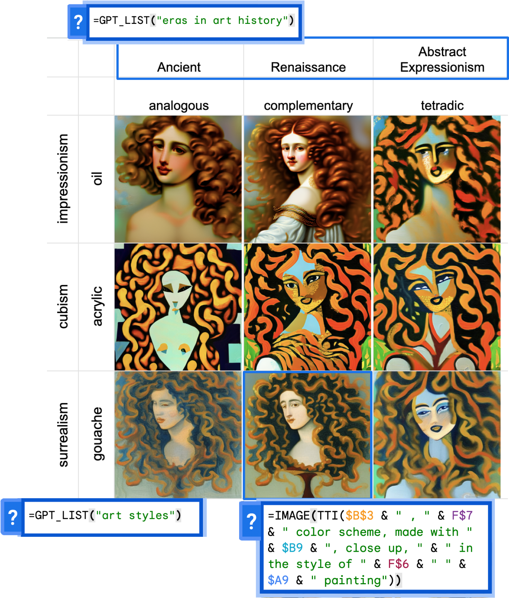
To study this, we developed DreamSheets, a design probe Text-To-Image “sandbox” in a spreadsheet. We observed novice and expert artists use the tool as a computational substrate – developing their own TTI interfaces as "sheet-systems" that exemplified a variety of sensemaking strategies and creative exploration styles.
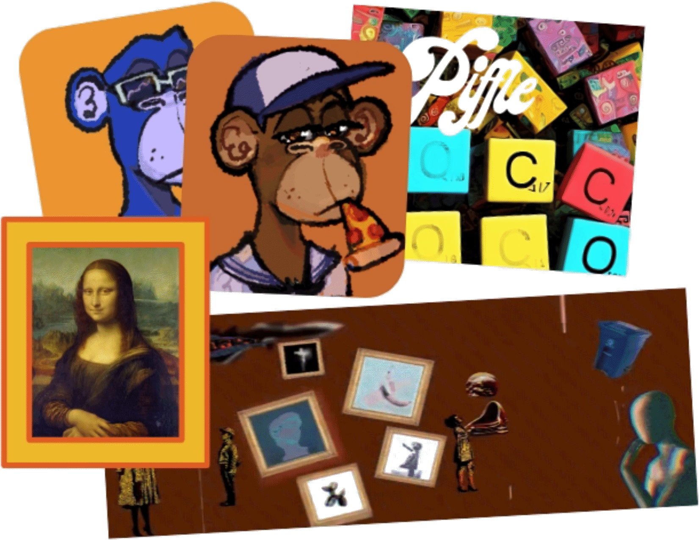
Interviews with 16 creatives utilizing NFT platforms reveal a vast and, perhaps unexpectedly, nuanced NFT Art World: cooperative networks developing novel creative practices, interactions, and communities with unique artistic subcultures.
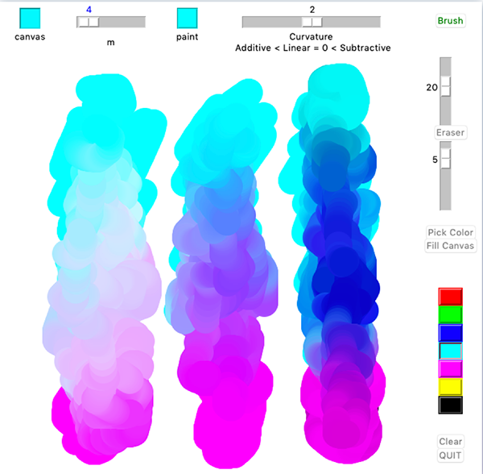
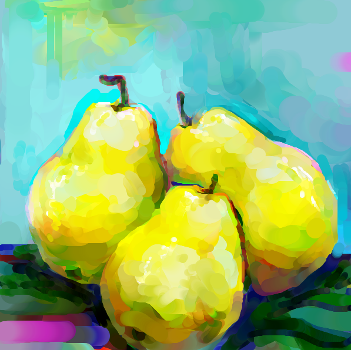
Enables real-time adjustments to color-mixing behavior while digitally painting, sampling color-blends from a parameterized Bezier curve in 3-D (RGB) Space.
Algorithms that optimize oligonucleotide chain design to minimize the cost of synthesizing proteins, towards more effective protein variant library design; implemented as a web application, designed for the needs of a team of protein designers at Princeton.
We utilized the Python and C++ with the LeapMotion infrared hand-tracking controller to recognize and translate ASL fingerspelling.